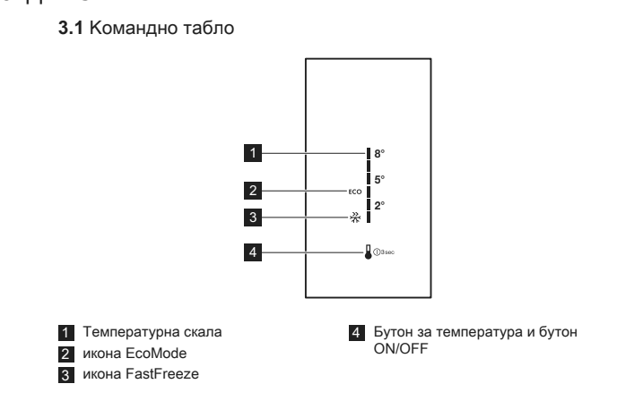

Функции
ВКЛ./ИЗКЛ.
- За да включите уреда, докосвайте бутона ON/OFF, докато всички светодиоди, съответстващи на температурната скала, светнат.
- Изключете уреда, като натиснете бутона ON/OFF за 3 секунди.
Регулиране на температурата
За да работите с уреда, докоснете бутона за температурата докато съответстващият на желаната температура индикатор светне. Избирането е в последователност от 2°C до +8°C. С всяко натискане на бутона зададената температура се придвижва с 1 позиция. Съответният светодиод светва. Докосвайте бутона за температура до достигане на желаната температура. Настройката ще бъде фиксирана.
Аларма за отворена врата
Ако вратичката е оставена отворена за няколко минути се активира аларма. Условията на алармата за отворена врата, са оказани от премигващият LED индикатор на сегашната настроена температура. Когато се възстановят нормалните условия (вратата се затвори), алармата спира.

Употреба
Замразяване на пресни хранителни продукти
Фризерното отделение е подходящо за замразяване на пресни хранителни продукти и дълготрайно съхранение на готови дълбоко замразени продукти. За да замразите пресни хранителни продукти, активирайте функцията FastFreeze най-малко 24 часа преди поставянето на хранителни продукти за замразяване във фризерното отделение. Поставете свежата храна, която искате да замразите във долното отделение.
Максималното количество храна, което може да се замрази в рамките на 24 часа, е указано на табелката с данни, етикет, поставен във вътрешността на уреда. Процесът на замразяване отнема 24 часа: през този период не добавяйте други хранителни продукти за замразяване. Когато процесът на замразяване приключи, се върнете на необходимата температура (вж. "Функция FastFreeze").
Съхранение на замразени храни
При първоначално пускане или след дълъг период, през който уредът не е използван, оставете го да работи поне 2 часа с включена функция FastFreeze, преди да поставите хранителните продукти в отделението. Ако трябва да се съхраняват големи количества храна, извадете всички чекмеджета от уреда и поставете храните върху стъклен рафт, за да получите максимално добри резултати.
FREESTORE
Функцията FREESTORE изстудява храната бързо и поддържа постоянна температурата в отделението. Препоръчва се да пуснете функцията FREESTORE, когато стайната температура надвишава 25°C. За да активирате устройството FREESTORE натиснете бутона върху него. Светва зелената лампичка.